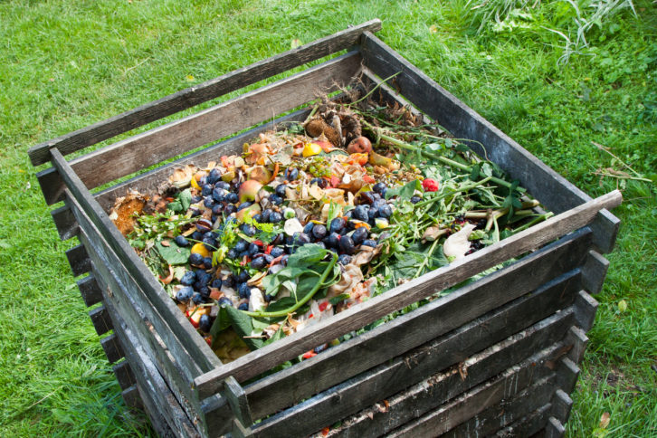

Guía Práctica
Guía Completa: Compostaje en Casa
¿Sabías que hasta el 30% de tus residuos domésticos pueden convertirse en abono? Aprende a crear tu propio compost casero con esta guía práctica.
¿Sabías que hasta el 30% de tus residuos domésticos pueden convertirse en abono? Aprende a crear tu propio compost casero con esta guía práctica. Descubre cómo transformar restos de frutas, verduras y otros desechos orgánicos en un valioso nutriente para tu jardín.
- Aprende la proporción correcta de materiales verdes y marrones
- Consejos para mantener la humedad y temperatura ideal
- Obtén compost de calidad en 3-4 meses
- Soluciones a problemas comunes